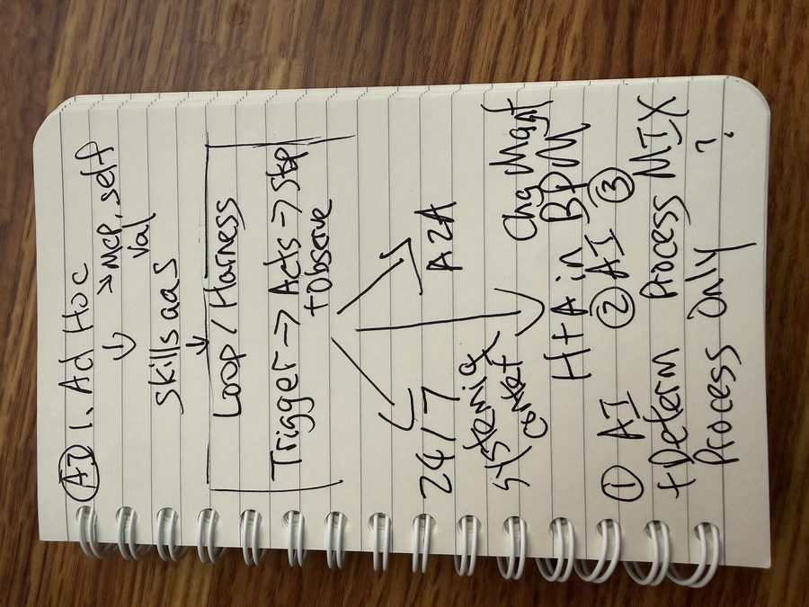
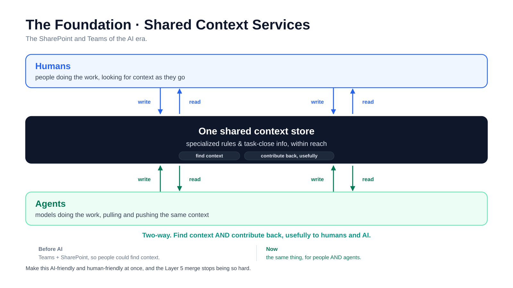

These are my own professional views as of June 2026. They do not represent Accenture or the firm's reinvention program or the firm's position on AI or ways of working. First published on LinkedIn on June 28, 2026, as "After a Year: Where I Think Knowledge Work Is Heading", a week after I drew the model by hand in a video on June 21. Rewritten for this site in October 2026, with a few points from that video folded in.
Where this model comes from
Harnesses, coding agents, loops that run around the clock. I built them on my own time and in public, inside client work when it fit, and with my own teams testing agentic ways of working.
None of it is theory. It is what I have seen building, breaking, and rebuilding, including where I got it wrong.
One caveat up front. Part of this is unpopular. Managing an AI like a contributor, giving it memory and feedback, eventually handing it a real slice of work, makes people uneasy. I still think it is where this goes.
Five layers, one spine and one foundation
![The master Patterns of Work diagram. Five stacked layers from individual at the top to organization at the bottom: 1 Individuals, IC and leaders; 2 Team; 3 AI as an individual contributor; 4 Management, siloed, with humans managing humans and AI managing AI; 5 Management, merged, where human and agentic managers share one common context. A box between 3 and 4 reads: not data readiness, agents working alongside us on a shared surface. The spine, context, governance, observability and evals, runs up the right side, and shared context services sit underneath as the foundation.](images/patterns-of-work.svg?v=2)
I think about this as patterns of work. Five layers. It scales from the individual at the top down to the whole organization at the bottom. The individual is at the top not because it matters most, but because it is the one almost everyone can already feel. From there each layer adds people, then adds management, then merges the two tracks back together.
One spine runs through all of it. Context. Governance. Observability. Evals. I will come back to it at every layer, because the layers are the visible part and the spine is what actually holds them up. Under everything sits one foundation: shared context services. The places humans and agents both go to find what they need and put back what they learned.
The big idea, before the detail: almost everyone wants to be at Layer 5, where humans and AI work as one. The real question is not how fast you can get there. It is whether you rush there, or build the foundations that let you actually stand there once you arrive. It is a gradient, not a blueprint. I do not have the whole thing figured out. I have a year of receipts and a strong opinion about the shape.
The map below is the board from the video, one layer at a time. Pick a layer to see the steps I drew for it and where it gets hard. Or pick a spine pillar, like governance, to see how the same concern changes from one person (what my agent may touch) to the whole organization. It is a shortcut through the model; every line in it comes from the sections below.
-
1 Individuals: IC and leaders
One person, IC or leader, running many loops at once. One person can do the work of many team members.
The steps I drew on the board
- Ad hoc prompting
- AI tests its work, integrates tools, enables AI sync
- Skills and projects
- Harness or loop engineering
- AI coding 24x7
Where it gets hard
Starting loops is easy. Working the same agent over time, managing and versioning its output, is the actual skill.
- Context
- what my agent needs to know
- Governance
- what my agent may touch
- Observability
- what it did overnight
- Evals
- is this skill any good
-
2 Team
AI-enabled teammates who share context, not just results.
The steps I drew on the board
- Skills and projects
- Share AI-driven output
- Share native AI artifacts, not just output
Where it gets hard
+300% faster each. Together, about +150%. Speed does not add, because the limit is coordination.
- Context
- shared across the team
- Governance
- shared, governed skills
- Observability
- see each other's agent work
- Evals
- is the team actually getting better
-
3 AI as an individual contributor
A real, accountable contributor that owns its work. A gradient, from a markdown file to a portion of me.
The steps I drew on the board
- Skills
- Evals
- Memory, context, capabilities
Where it gets hard
I can build the contributor. What I cannot yet build is the trust envelope that makes handing it real work responsible.
- Context
- the agent's working memory
- Governance
- the agent owns its work
- Observability
- its actions are visible
- Evals
- how good is this agent, at what
-
4 Management, but siloed
Humans manage humans. AI manages AI. Two separate tracks, running in parallel.
The steps I drew on the board
- AI management and coordination skills
- AI has its own working surface, same with humans
- Evals, observability, governance
Where it gets hard
The siloing is efficient and it is alienating at the same time. Humans feel left out of the productivity loop.
- Context
- shared across the agent mesh
- Governance
- rules for agents at scale
- Observability
- watch the mesh, not every step
- Evals
- how do you grade an agent mesh
-
5 Humans and AI, merged
Human managers and agentic managers sharing one common context. The silos from Layer 4 dissolve into one mesh.
What I drew it needs
- Common context pool
- Governance and observability
- Evals
Where it gets hard
The hard jump is the merge, and it is hard for an unglamorous, fixable reason: our surfaces were never built for agents.
- Context
- one live context for humans and AI
- Governance
- accountable across the mesh
- Observability
- humans see the agentic side
- Evals
- grade the human and agent delivery
Watch this part0:00 Five layers of working with AI
Layer 1. One person, IC or leader, running many loops

Start with the layer I have lived the most. You, solo. One person and their agents.
This is where most of my year went. Building harnesses, building coding agents, running them around the clock. I will give you concrete receipts rather than ask you to take my word for it, and most of them are public.
The first is my continuous-agent, built in the open across the year, from a first version in January to a "Second Brain" version this spring. It is a 24/7 autonomous coding agent, and I demoed a running version of it live at AI Tinkerers in Columbus. The second is what I think of as an AI dark factory: a harness I built back in January that runs lights-out and produces real outputs, not toy ones. The third is a build. Starting from a design, I put together a site I am proud of, about twelve blocks, in roughly eight hours. One person, one working day, a real site.
The headline, at least the way I have built it, is that this amplifies a single person enormously. One person can do the work of many team members. We are at a new point of personal acceleration, and I mean that literally. Not in a slide-deck way. In a "this actually shipped over the weekend" way.
I want to be precise about what I optimized for, because it is not the obvious thing. Most people reach for speed. The thing I invested most heavily in is the level of output. Volume and quality of what one person can ship, held high as the volume climbs. Speed is easy to get and easy to fake. Sustained output that you would actually put your name on is the hard one.
This layer is for both ICs and leaders, and I mean that literally. A leader building with AI is still one person being amplified. Same layer, same work. That matters later, at Layer 5, so I am planting it here: with AI, building is not something you graduate out of when you get promoted.
Inside this layer there is a climb, and it was the first row I drew on the board for the video. Before AI, you just do your work. Then comes ad hoc prompting, and from there AI testing its own work, integrating tools, and several AIs talking to each other. Then a pattern sets in. If you have done something with AI ten times, by the eleventh you have a pattern, and that is when it becomes a skill or a project. After that comes the harness. I have been talking about harnesses since late 2025, and now people call it loop engineering. Instead of you working with the AI, you use AI to work with AI, which makes the output repeatable and more consistent. A loop can start from different triggers: a schedule, you, or even another AI. Even at the top of that climb, it is still the individual track, and none of it scales to a team on its own yet.

Here is the part nobody tells you. The fun part is starting loops. One person can kick off a lot of loops at once, and the first week feels like magic. The hard part is not starting them. It is working the same agent over time. Managing its output. Versioning it. Keeping quality high across dozens of runs when the easy eighty percent is done and the last twenty percent is where all the judgment lives. Starting an agent is a party trick. Living with one is the actual skill.
So the real shape of Layer 1 is: enormous individual leverage, gated by your ability to manage what you started. The bottleneck moves from "can I produce this" to "can I keep what I produce coherent." That is a new muscle, and most of us are still building it.
Watch this part0:56 Individuals, ICs and leaders2:10 Harnesses and loop engineering
Layer 2. Teams, where individual speed does not add up
![Layer 2 diagram: Person A works in markdown and Git and tracks every change line by line; Person B works in Word, PowerPoint and Excel with versions in SharePoint and file copies. Each runs their own agent and is +300% faster on their own. Banner: +300% faster each, together about +150%, speed does not add. Why it stalls: the tools were built for humans, not for agents to hand work to each other; different formats, different systems, and a flood of versions. What we need: one frictionless surface both humans and agents can read and write, a common format, shared ways of working, and versions anyone and any agent can trace.](images/layer-2-team.svg)
Now add people. This is something I am thinking about and experimenting with constantly in my actual day job, and it is the layer I am least done with.
My team is more agentic than ever. Each of us is about three hundred percent faster on our own work than a year ago. Speed does not add across people, though. Put two of us together and the combined output lands around a hundred and fifty percent, never past the speed of one. Individual speed is real. It mostly does not turn into team throughput, because the limit is coordination, not horsepower.
The reason is not the people. It is the systems. Our agents do not hand work to each other, so everything still routes through us, through meetings and shared drives and status calls. The leverage is real, and it is trapped inside each person. We are coordinating on tools built for humans, in a world where each of us now has an agent that could be doing the coordinating.
The shift I want is teammates sharing context, not just results. And both halves matter. The formulation, which is the inputs and framing we feed our agents, and the output. We are reasonably good at sharing outputs. We are bad at sharing the formulation, and the formulation is where the real intent lives. Take a spec-driven project: the functional lead produces a functional spec, the architect produces the architecture, and the engineer puts the two together with the right skills to build the thing. What gets passed along is the finished artifact. The stuff behind making the sausage, the source material and the reasoning, gets lost on the way.
If the project context is simply available to each other, a lot of meetings stop being necessary. AI can pre-align on the why, the what, and the how before we ever meet. Or it can tell us a meeting is actually needed and put one on the calendar, instead of the default of meeting first and thinking second. The idea that another architect's AI could read my thinking and anticipate it is a little strange. It is also kind of great. That is the upside.
In practice, collaboration at this layer looks like two concrete mechanisms.
First, shared skills or project instructions that teammates can use and contribute back to. A common, agentic way to put your knowledge somewhere a colleague's agent can pick it up. Not a wiki nobody reads. Live instructions that get executed. In code, that means skills checked into the repo and reviewed like any other change, so the whole team works from the same set of instructions. I have pushed on this directly with my own team, building shared AI skills aimed at concrete enablement objectives rather than one-off prompts, so that the same governed skill lifts more than one person.
Second, agentic artifact handoff. One teammate's agent output becomes the input to another teammate's agent flow. My agent produces something, your agent consumes it, and neither of us had to sit in a meeting to make the handoff happen.
Here is the concrete version of why it is hard, and it is more mundane than you would guess. The blocker is often just file formats. I can produce HTML and have my agent build from it, because HTML is an AI-friendly format. So is markdown. But a business partner I work with might live in Word docs, PowerPoints, and Excel files. Some formats are AI-enabled. Some are not. And it runs past formats into tooling. I track my changes in Git. My business partner is not a Git expert, and should not have to be. So even when both of us are highly agentic on our own, we cannot easily clap our hands together, because we are working in different formats with different ways of working. What we are missing is a common format, a shared stream of communication, that both the humans and our agents can read and write. Until that exists, the handoff falls back to a meeting.
There is also a problem underneath all of this that almost nobody talks about. Versions. When one person works with AI, the output multiplies fast, and tracking what actually changed is already hard. I lean on Git for exactly that. Now multiply it by every person on the team and every agent they run, all producing versions at once. Traceability and maintainability stop being nice-to-haves. Whether the answer is Git, SharePoint history, or something built for this, tracking changes across people and their agents is going to be one of the defining problems of this layer.
So why this is hard, and why I am not done: most of our current work surfaces have no easy way for each person's agents to talk to each other. The tooling assumes a human is the integration point between any two pieces of work. Take the human out and there is often no wire left to connect. This is an open problem I am actively trying to solve, and it is an interesting one. I do not have a clean answer yet. I have experiments.
Watch this part3:07 The team4:01 Sharing AI native artifacts, not just output
Layer 3. AI as an individual contributor that owns its work
![The Layer 3 spectrum, four cards from simple to advanced. 1, a skill: a markdown file with an objective that runs, then stops, triggered by a human or another agent, the lower bar to entry. 2, a shareable project: bundled context and instructions others can pick up, reusable across the team. 3, an acting agent: the right tools and a memory, takes real actions, its actions visible to humans and AI. 4, a portion of me: goals of its own, episodic memory that stores and retrieves, learns and runs its own retrospectives, accountable, reviewed, self-improving, everything a human IC has.](images/layer-3-spectrum.svg)
This is the one that is really big for me, and the centerpiece of the whole model. AI as a real individual contributor. Not a tool you operate. A contributor that owns its work.
The reframe is the whole point. When you treat AI as a tool, you ask "what can I get it to do for me." When you treat it as a contributor, you ask different questions. What is it accountable for. How does it get better. Who gives it feedback. What does it remember. Those questions change how you build, and they are the questions that take you past the demo and into something that compounds.
Let me be careful here, because this is exactly the part people find uncomfortable, and I do not want to hand-wave it.
It is a gradient, not a switch. This is the most important thing to understand about Layer 3, and it is what keeps it grounded. An AI IC is a unit of work along a spectrum, not a single all-or-nothing autonomous robot.
At the simple end, an agent can literally be a markdown file. It has an objective. It runs. It stops. A human triggers it as a skill or a project, or another agent triggers it. That still counts. It is a real, if small, contributor. Do not let anyone tell you it has to be sophisticated to count.
Next along the spectrum is a shareable project. Bundled context and instructions that others can pick up and run, which is also the bridge back to Layer 2.
Then an agent with the right tools and memory that actually takes actions, not just reads and advises. And those actions are visible. To humans and to other AI. Capability and observability arrive together, on purpose. An agent that can act but cannot be watched is not a contributor, it is a liability.
At the far end is the part that makes people lean back: a portion of me. Goals. A memory layer like a person has, that stores what happened and pulls it back when it is relevant. It learns. It runs its own retrospectives. It is accountable, reviewable, and yes, it gets something like a performance review. Ideally it is self-improving. Everything a human IC has, scoped to a slice of real work.
When I drew this layer on the board, I drew the build order rather than the spectrum. Everything starts with skills. Then evals, so the agent can tell whether it is getting better. Then memory, context and capabilities. And from there it gets very dynamic, very quickly.

A few things I have come to believe matter a lot at this layer.
Memory is the thing that turns a tool into a contributor
Episodic memory, stored and retrieved, is what lets an agent get better instead of starting from zero every morning. This is the part I went deepest on this year. When I gave my continuous-agent a real memory store, the hard problem was never storing things. It was retrieval, and it was deciding what kind of memory you were even dealing with. I ended up splitting it into five types, principle, semantic, procedural, episodic, and reflective, because a procedure an agent should always follow is a different thing from a one-time episode it should remember happened. Memory is also, as I will get to, the single biggest liability. Hold that thought, especially the word episodic.
Feedback is not optional, and it has a shape
Positive and negative, and you start positive, the same way you would with a person. Feedback comes from everyone who uses the agent, not just whoever built it. Even other AI. And the agent takes that feedback in on its own and acts on it. The day you give an AI a structured performance review and it actually changes behavior because of it is the day the reframe stops being a metaphor.
The AI IC is a lower bar to entry, not a higher one
This is the practical payoff people miss. Getting business partners to install skills and tooling just to get value is hard. Most will not do it. Say I have twenty skills loaded and a teammate joins who does not love AI. How do they get the same benefit? Asking them to copy my setup is a hard sell. An AI contributor you can just talk to is a far lower on-ramp than asking everyone to become a builder. The accountable-IC framing is the high end of the spectrum. The low end is "you can finally just ask."
Most of the work of making an agent good is giving it context, and a team channel hands you that for free
Tag Claude in a Slack or Teams channel and it does not start cold. It inherits the channel. The decisions, the history, the half-finished threads, who said what and why. I have watched an agent give a sharp answer in a project channel purely because the channel had been carrying that project for months. Nobody set out to build a context store. The team built one by working in the open, one message at a time, and that crowd-sourced pile of context turns out to be one of the best things you can point an agent at. It is the first hint of the foundation I get to at the end. A channel is a small version of the shared surface the whole model rests on.
The dream at the far end, and the real blocker
Here is a dream of mine. I keep coming back to it, and it is the most unpopular part of all this.
The far end of that spectrum is taking a slice of what I do and giving it to an agent. My knowledge, mentored and trained into it, carrying some of my own internal work. Not my direct reports. Managing people stays human, full stop. But a piece of my own contributions, running as an agent, inside the firm I am at. I think that would be very cool.
This is still aspirational. Plenty of people are already building fragments of what they do as separate little agents, a skill here, a workflow there, scattered across different tools. That part is real and it is happening now. The version I specifically want to build is the one that runs on a strong memory implementation, because memory is the thing that turns a drawer full of disconnected fragments into something that is actually a piece of you. Without it you have a pile of tools. With it you have a contributor that remembers.
Let me be clear about what I am not saying, because this is the part that gets misread. I am not talking about leaving. I am happy where I am and I am not planning to go anywhere. I am not talking about automating myself out of a job, or anyone else out of one. And this is aspiration, not a roadmap I am running. It is a direction I find exciting, hedged on purpose, because the real version of an exciting idea includes its limits.
And here is the turn that matters. Even once I nail the memory, the hardest blocker is not engineering at all. It is trust and data security.
Think about it this way. A person is good at keeping secrets. We are bound by a code of honor, and even someone who leaves a firm generally does not leak what they knew. An agent's memory is a different kind of thing. The very feature that makes it valuable, deep episodic memory, is the exposure. If two thousand of its memories leak, that is two thousand specific things out in the open, and they can be used against you all at once. A human forgets, blurs, protects. An agent remembers precisely, and precision is the risk.
So the AI IC is, to me, both the most exciting layer and the one most gated by something other than capability. I can build the contributor. What I cannot yet build is the trust envelope that makes handing it real work responsible. That gap is real, and it is where the interesting work is.
Watch this part5:42 AI as an individual contributor7:06 Skills, evals, memory7:50 The teammate who does not love AI
Layer 4. AI manages AI and humans manage humans, in silos
![Layer 4 diagram: two parallel management tracks separated by a dashed wall. Left, humans manage humans: ancient, well understood, chain of command since the Roman days, a manager over two reports. Right, AI manages AI: a spectrum from one 24/7 agent to an agent-to-agent mesh, wide open, most of the innovation is here. Middle note: you don't need advanced agents, simple streamlined flows count: page, research, preview and publish, legal review bots. Bottom: efficient, and alienating, because when AI manages AI in its own silo, humans feel left out of the productivity loop.](images/layer-4-siloed.svg?v=2)
Now management. And the first real version of it is siloed. Humans manage humans. AI manages AI. Two separate tracks, running in parallel, not yet integrated.
The human side is not new. We have managed people since, pick your line, the Roman days. That baseline is ancient and well understood. Chain of command, spans of control, reviews. We did not invent any of it recently.
The AI side is wide open, and it is a spectrum on its own. On one end is my single agent running around the clock, managed entirely by me. On the other end is a full agent-to-agent mesh, where agents coordinate and hand off to each other with a human watching the boundary rather than every step. Between those two ends is most of the actual innovation happening right now. A lot of it runs on protocols for agents talking to agents, like A2A and ACP, and each agent in the mesh can carry its own skills.
One nuance that took me a while to internalize: you do not need advanced agents to reach Layer 4. The agents can be advanced, but the work can be simple, straight out of Layer 3. The thing that makes it Layer 4 is not agent sophistication. It is that the coordination between agents runs on its own instead of routing through a person every time.
A concrete, deliberately unglamorous example. AI creates a page. It does the research. It runs preview and publish. It feeds the result through legal review bots. The whole flow runs end to end, done deterministically or agentically, with a human at the edges rather than in the middle of every step. None of those agents is exotic. The win is that the handoffs no longer wait on a human to carry them.
This is one of the bigger steps in the whole model. Agents managing themselves to produce a larger output than any single agent could. It is where I see a ton of innovation, and it is not hypothetical for me. I have one built, a content factory, where agents collaborate agent-to-agent, each using a different part of the agentic toolkit, handing off to each other to produce an output bigger than any one of them alone. When I wrote this in June, I was getting ready to present it at adaptTo() 2026 that September. So when I describe this layer, I am describing something I have actually stood up, not a diagram I am hoping comes true.
There is also a framework layer forming here, and it is worth naming. Orchestration frameworks that can spawn their own agents, keep those agents decoupled from each other, and bake in observability and governance from the start rather than bolting them on later. The decoupling is the part that matters. It is what keeps a mesh debuggable instead of a black box, and it is what lets you swap or fix one agent without the whole thing falling over.
What this layer needs most is knowledge from knowledge workers. I see a lot of posts saying the agentic revolution depends on data, getting all your data clean and organized first, and I think that is partly right. I think it depends more on the knowledge people carry: what the top contributors and the top leaders in a space actually do, and whether that can be turned into agents that are observable and run under strong governance. That takes knowledge from knowledge workers, a lot of change management, and a lot of human evals looking at the output.
Here is why Layer 4 also scares people, and I think naming it is more useful than pretending it does not. When AI manages AI in its own silo, humans can feel left out of the productivity loop. The gains are clearly happening, but they are happening somewhere people are not invited. The siloing is efficient and it is alienating at the same time. That tension is the entire reason Layer 5 has to exist.
Watch this part8:04 AI manages AI9:54 Knowledge from knowledge workers
Why AI with AI is easy and AI with humans is hard
![The learning between Layer 4 and 5, two panels. Left, green: AI to AI is easier than expected, given a shared AI-friendly interface, shared context and shared storage; this is why the Layer 4 agent track moves fast. Right, amber: AI to humans is the hard part, because our human interfaces were never built for agents; humans read screens, click buttons and sit in meetings, and an agent dropped in works one-handed; this is the real jump to Layer 5. Below: fix the foundation, make the shared surface AI-friendly and human-friendly at once, and the merge gets a lot less hard.](images/learning-4-to-5.svg)
Before Layer 5, the single most useful thing I learned this year, because it reframes where the difficulty actually is.
It is much easier to get AI to work with and manage other AI than I expected. As long as they share an AI-friendly interface, shared context, and shared storage, agents coordinate with each other remarkably well. That is why the Layer 4 agent track moves fast.
It is a whole other thing to get AI and humans working together. And a big reason is uncomfortable: a lot of our human interfaces were never built to be AI-friendly. Our tools assume a human reads the screen, clicks the button, sits in the meeting. Drop an agent into that and it is working with one hand tied behind its back.
So the hard jump is not agent-to-agent. We mostly know how to do that. The hard jump is the merge, and it is hard for an unglamorous, fixable reason: our surfaces. That is the bridge to Layer 5, and it is why the foundation at the bottom matters as much as it does.
Watch this part9:27 AI to AI is easier than AI with humans
Layer 5. Humans and AI merged into one mesh
![Layer 5 diagram: the wall comes down. One merged field where two human managers, judgment and intent, priorities and trust, and two agentic managers, scale and recall, tireless execution, connect to one shared context of memory, context and outputs, governed and observable, with roles mixing. A box of what stays human: coaching, guiding, leading. A box quoting the Bloomberg headline from June 2026, Why Companies Are Cutting Middle Managers in the AI Era, read as an over-reaction, with the truth in between: coordinate, not cut. Bottom: not cutting people, amplifying them; when an agent is confident it finishes the task, when it is not it routes to a person.](images/layer-5-merged.svg)
This is the dream. The silos from Layer 4 dissolve into one mesh. Human managers and agentic managers sharing one common context, both with visibility above and below them, the way good leaders already operate.
This layer is the most speculative. I am reacting to what I read and what I have built, not reporting from a finished system. Nobody is fully living at Layer 5 yet, me included.
There is a Bloomberg headline from June 2026. "Why Companies Are Cutting Middle Managers in the AI Era." It is bold, and it is pointing at exactly this shift. I am only going to quote the headline, because that is what I can stand behind. But it sets up where I land.
I read "cut the managers" as an over-reaction. Not wrong to notice the shift, just the wrong conclusion drawn from it. The truth, for me, sits somewhere in between. The point is not to remove people, and it is not to freeze everything exactly as it was either. It is to merge the two tracks: humans and AI coordinating the work of both human and AI contributors, as one connected stream, with real governance and observability around it. Layer 4 feels scary precisely because it leaves humans out. Layer 5 is the version where everyone is back in the loop, the routing is shared, and the productivity is shared rather than siphoned.
What that merge actually requires is not magic. It is specific. Memory sharing. Context sharing. Making sure the AIs have the live context, not a stale copy of it. And making sure humans have observability, reporting, and governance, plus the irreducibly human work of coaching, guiding, and leading. The agents get context and the ability to act. The humans get visibility and the judgment calls. Same mesh, different roles.
One test for context: if a meeting happened and the AI does not know about it, the common context is already broken. And governance and observability will take more effort at first. There will be a lot of piloting, rolling out and collecting what we learned, and a lot of the human work shifts from doing the work to watching AI do it.
This layer is still theoretical, and it can mean a few different things. Let me give you two versions, from simpler to more advanced, because I think the gap between them is the whole story.
The simpler version: human flows and AI flows each do their own work and hand off to each other at the seams. Two tracks, but with real handoffs instead of a wall between them. That is basically Layer 4 with the silo opened up, and it is within reach.
The more advanced version is the one I find hard, and worth it. Here, AI and humans both direct work, onto both AI and human ICs. And the routing runs on confidence. When an agent is highly confident in a task, it just completes it, no human in the path. When it is uncertain, it routes to deep human expertise, and it lets the humans take their time and do the thing only they can do well. The answer to "what should I work on next" stops coming from only your human manager. It arrives as one blended stream, from human leaders and from agentic ones, drawing on the same context. A human IC and an AI IC could both get their next priority from a mix of human and AI direction, and neither source feels bolted on. Leaders and ICs, human and AI, all collaborating in one loop. This is the layer I am least sure how to build, and the one I most want to get right.
It also means better outputs, and we have to actually define what better means. That definition can be done agentically, deterministically, and the good old-fashioned human way. All three, not one of them pretending to be objective.
This is also why the "cut the managers" framing misses it for me. The same capability that someone reads as a reason to remove people is the one that, used well, amplifies them instead. Two completely different futures, built on the same technology. I know which one I am trying to build toward.
Watch this part10:49 Humans and AI in one mesh12:13 The meeting test13:01 A leadership grid
The spine of context, governance, observability and evals
![The spine as a grid: four pillars, context, governance, observability and evals, across all five layers. Context runs from what my agent needs to know at Layer 1 to one live context for humans and AI at Layer 5. Governance from what my agent may touch to accountable across the mesh. Observability from what it did overnight to humans see the agentic side. Evals from is this skill any good to grade the human and agent delivery. Footer: evals are the rigor to refine what you have, not an excuse to chase the next shiny thing.](images/spine.svg)
I have mentioned the spine at every layer. Now the spine on its own, because it is the part that decides whether any of the five layers actually holds weight or just looks good in a diagram.
Four pillars run vertically through all five layers. Each one runs the whole height. Sometimes a pillar looks the same at every layer, and that is fine. Often it changes shape as you climb, and those are the differences worth watching.
Context
Every layer needs the right context in. The individual's agent, the team's shared instructions, the AI IC's working knowledge, the management mesh's shared picture. Context is not abstract. It is the raw material every layer runs on, and most failures I have seen are really context failures wearing a different costume.
Governance
Who is allowed to do what. What an agent can touch, what it cannot, who is accountable when it acts. As you climb the layers, governance stops being a checkbox and becomes the thing that lets you sleep at night while agents act on your behalf. Of the four pillars, governance is the one I would underline. It is the biggest open piece as the agents get more capable, and it is the one most likely to decide whether any of this is allowed to scale.
Observability
Can you see what happened. Not just the final output, but the actions along the way, for both humans and agents. At Layer 1 this is "what did my agent do overnight." At Layer 5 it is "can a human leader actually see into the agentic side of the mesh." Same pillar, rising stakes. Here is a useful dependency I have noticed. When the system is properly decoupled, with agents cleanly separated and the right human positioned in the loop, observability starts to come naturally. You do not have to bolt it on after the fact, because the seams where you would watch are already there. Coupling is what makes a system opaque. Decoupling is what makes it watchable.
Evals
I do not enjoy building evals. They are the unglamorous part. But I have come to believe they are where the real value is, end to end. And the question changes as you climb. At Layer 1, is this skill any good. At Layer 2, is the team actually getting better, and how would you know. At Layer 3, how good is this agent, and at what. At Layer 4, how do you even grade an agent mesh. At Layer 5, how do you evaluate a real delivery system run by humans and agents together. Humans evaluate. Agents evaluate too.
Here is how I think about evals, and it is the most on-voice thing I will say in this whole piece. Evals are the rigor to refine what you already have. They are not an excuse to go chase the next shiny thing. That discipline is the entire difference between a system that gets better and a system that just gets bigger. Almost everyone is optimizing for bigger. The teams that win will be the ones boring enough to optimize for better.
Here is where I am on this. I cannot yet tell you the clean war story where an eval caught the thing that would have shipped broken. I am not there yet. The conviction is ahead of my receipts on this one. But I believe, more than almost anything else on this board, that evals are the future. I would rather say that plainly than dress up a story I have not earned.
Watch this part11:55 What the merge needs12:20 Governance and observability12:53 Evals
The foundation is shared context services


All five layers and the whole spine sit on one thing. Shared context services. This is the least exciting part of the model and possibly the most important, so I want to give it its due.
Think about what we had before AI. Microsoft Teams. SharePoint. Wikis. Drives. Places where humans went to find the context they needed to do the job, and places they put context back so the next person could find it. That infrastructure was not glamorous, and everything rested on it. No shared context, no team.
Agents are no different. They need their context within reach, often closer to the task and more specialized than a human would need. And critically, they need to contribute back, in a way that is useful to both humans and AI. Two-way. A shared surface, not a one-way feed.
This is also where the Layer 4-to-5 learning pays off. The reason AI-to-AI is easy and AI-with-humans is hard is mostly that our human surfaces were never built to be read and written by agents. Fix the foundation, make the shared context services AI-friendly and human-friendly at the same time, and the hard merge at Layer 5 gets a lot less hard. The foundation is not below the interesting work. It is the thing that decides whether the interesting work is even possible.
Watch this part12:01 A common context pool
The new craft is designing where humans and agents work as one
We have run on the same management fundamentals for a very long time. Rome gave us chain of command. The Mongols coordinated the largest contiguous land empire in history with horse-relay stations and no ERP, no Slack, no dashboards. We inherited those fundamentals and, for the most part, never questioned them. They were simply the water we swam in.
AI is the first real reason to ask the question from first principles. Not "how do we make the old way faster," but "is the old way even the right way anymore." For the first time, that question is open. A lot of what we built our ways of working on is no longer a given. I think how we work in ten or twenty years will look very different from how we work now.
So here is where I land after a year of building this, breaking it, and trying again.
The new craft is not building the agent. Building the agent is getting easier every month. The new craft is designing the layer where humans and agents work as one. That is the hard part, the unsolved part, and the part worth your best people.
And I will say the unpopular thing plainly, since it is why I bothered to write all this down. Managing an AI like a contributor, giving it memory, giving it feedback, eventually handing it a real slice of work, is going to feel strange and it is going to make people uneasy. I still think it is where this goes. Not to replace the people. To finally let the builders keep building and the leaders keep leading, at the same time, which was never possible before.
I have been thinking a lot about this, and I am glad I took the time to put it together.
Watch this part13:35 How we work in ten or twenty years